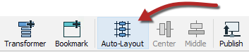
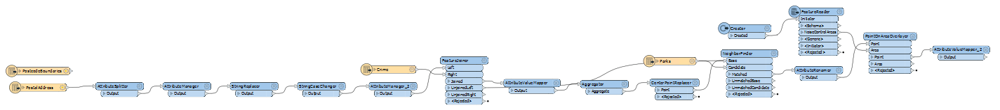
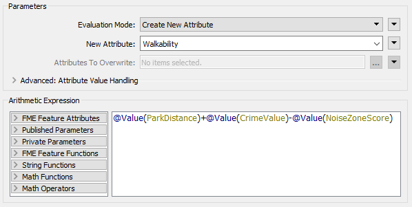
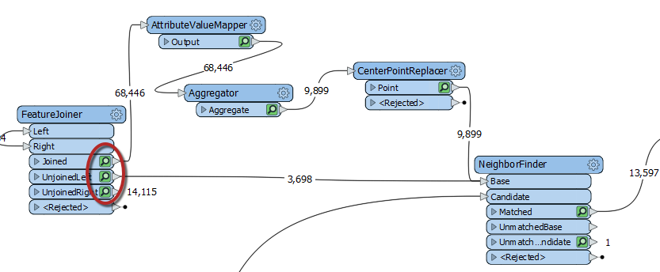
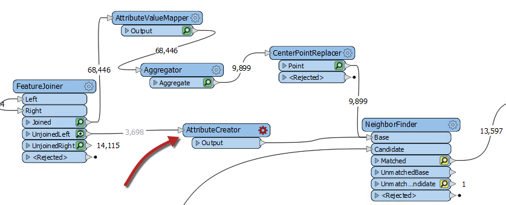
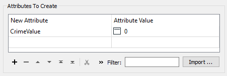
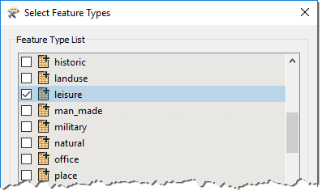
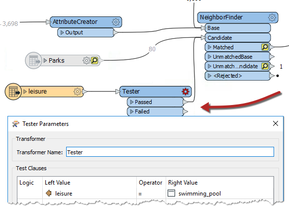
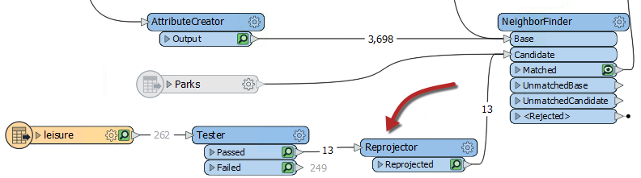

After completing this unit, you’ll be able to:
Your manager just assigned you to take over a project from your colleague, and they passed their workspace on to you. This project is to calculate the "walkability" of each address in the city of Vancouver. Walkability is a measure of how easy it is to access local facilities on foot. The workspace will measure the distance to the nearest park, the amount of crime in an area, and other similar metrics.
The workspace currently assesses crime, parks, and noise-control areas, but it doesn't give an overall measure of walkability.
Let's build on their workspace and use our debugging skills to address any problems we encounter.
Start FME Workbench 2021.0 and open the starting workspace. Then run the workspace to cache the data.
This workspace is a bit messy, but we will fix that in a later exercise. First, let's figure out what this workspace does:
This workspace is very messy as our colleague didn't follow any best practices. Follow the instructions in the Document Your Workspaces module to organize it, or click on the Autolayout button to quickly tidy it up:

Note that this will change how your workspace looks compared to the instructions, so pay attention to the transformer names and ports:

We can create a measure of walkability that combines all of our current values using the ExpressionEvaluator transformer.
So add an ExpressionEvaluator transformer to the end of the workspace and connect it to the AttributeValueMapper_2.
Inspect its parameters. Set it up to create a new attribute called Walkability that is:
@Value(ParkDistance) + @Value(CrimeValue) - @Value(NoiseZoneScore)

With this expression, the smaller the result, the better. Run the workspace. Because we ran the workspace and already have caches, only the ExpressionEvaluator will run.
Let's assess whether the result of the translation is correct.
Firstly check the log window for errors and warnings. There are no errors, but there are several warnings, which is not a good sign:

Click on the warnings button to filter out the warnings. The warnings say:
ExpressionEvaluator: Failed to evaluate expression '@real64(560.3272250455418+<null>-0)'. Result is set to null
Inspect the output cache on the ExpressionEvaluator, and some addresses do indeed have a Walkability value of <null>.
So we know there is a problem, let's try and figure out where the problem is and why it occurs.
We can tell the warning comes from the ExpressionEvaluator, but that doesn't necessarily mean that is where the problem lies. The calculation fails because the middle value is <null>
If the expression is:
ParkDistance + CrimeValue - NoiseZoneScore
Then we know that it must be the CrimeValue that is an issue because it is the middle value.
Let's find out where it becomes an issue. First, organize the workspace a bit, and then inspect the caches on the FeatureJoiner transformer. We are inspecting the FeatureJoiner because that's where we first get our Crime data:

There are no <null> values from the FeatureJoiner, so let's move along the translation. Check the cache for the AttributeValueMapper. This transformer sets values, so perhaps nulls are coming out of there?
If you inspect the AttributeValueMapper cache, you'll see no <null> values for the CrimeValue or the crime Type attribute. There are also no nulls for the Aggregator and CenterPointReplacer caches.
Checking each feature cache is a bit time-consuming; let's try a different method. Check the feature counts on each connection. There are 68,446 features tagged with a crime (FeatureJoiner:Joined), but then that is reduced to 9,899 after the Aggregator, and then there are 3,698 features without a crime (FeatureJoiner:UnjoinedLeft). That gives a total of 13,597, coming out of the NeighborFinder, which is correct.
Do you see it yet? The 3,698 features that do not have a crime: what CrimeValue do they get? Inspect the UnjoinedLeft output from the FeatureJoiner, and you will see that they do not have the CrimeValue attribute. That's why the ExpressionEvaluator says that there are nulls. These features do not have a CrimeValue because they don't enter the AttributeValueMapper, which assigns the CrimeValue a value.
If those features do not have a CrimeValue attribute, then we should give them one. To do so, add an AttributeCreator transformer to the workspace between the FeatureJoiner:UnjoinedLeft output port and the NeighborFinder:Base input port:

Open up its parameters and create an attribute called CrimeValue with a value of zero (0).

Run the workspace, which will run from the AttributeCreator to the ExpressionEvaluator. You should now find fewer warnings and that the output contains no <null> values.
The city has decided that parks are not a great candidate for walkability scores because there is usually a park nearby. They decided to evaluate how easy it is to walk to a swimming pool.
We can reuse the same workflow for swimming pools that we used for parks, with just a few minor updates.
First, let's add a new reader with the following parameters:
|
Reader Format |
OpenStreetMap (OSM) XML |
|
Reader Dataset |
https://s3.amazonaws.com/FMEData/FMEData2021/Data/OpenStreetMap/leisure.osm |
When prompted, select only the leisure feature type:

Then move the new leisure reader near the Parks reader and connect it to the NeighborFinder:Candidate input port. Then right-click on the Parks reader and select disable.
If you inspect the leisure data, you'll notice various leisure facilities types, with the type recorded in the leisure attribute.
So, add a Tester transformer between the leisure reader and the NeighborFinder. Set up the parameters to test for leisure = swimming_pool

Now update AttributeRenamer to be PoolDistance instead of ParkDistance. The renaming of this attribute will cause the ExpressionEvaluator to turn red.
To fix the ExpressionEvaluator, open the parameters and change @Value(ParkDistance) to @Value(PoolDistance) to take account of the new PoolDistance attribute:
@Value(PoolDistance) + @Value(CrimeValue) - @Value(NoiseZoneScore)
Re-run the workspace. Check the log for warnings and errors, and then inspect the ExpressionEvaluator cache.
Notice that the walkability scores are exceedingly large all of a sudden due to the PoolDistance. Something is wrong, but what?
The PoolDistance is the source of the problem. There is no related log message to give a clue, and the Feature Count numbers look correct.
Let's inspect the data. Click on the leisure reader and while holding the shift key, click on the NeighborFinder. Then right-click on either object and select Inspect Cached Features. This step will open all the selected caches in Visual Preview.
Right-click in the Graphics view, go to Background Map, and ensure Background map off is selected. Visual Preview shows two specks of data, a long distance apart. This result is typical of a mismatch of coordinate systems.
Click on some features and select the Feature Information button. In this window, you will see that the primary data has a coordinate system of UTM83-10, while the leisure data from OSM has a coordinate system of LL84.
This disparity is why the "nearest" pool to each address is such a high distance.
The obvious solution is to reproject the pools to the correct coordinate system. So, add a Reprojector transformer to reproject the leisure data before it gets to the NeighborFinder:

Inspect its parameters and set it up to reproject from LL84 to UTM83-10.
Re-run the appropriate parts of the workspace. Check the log window and inspect the ExpressionEvaluator cache.
Each address now has a walkability score account for pools instead of parks, with a lower number being better and a higher number worse.
Congratulations on debugging this workspace.